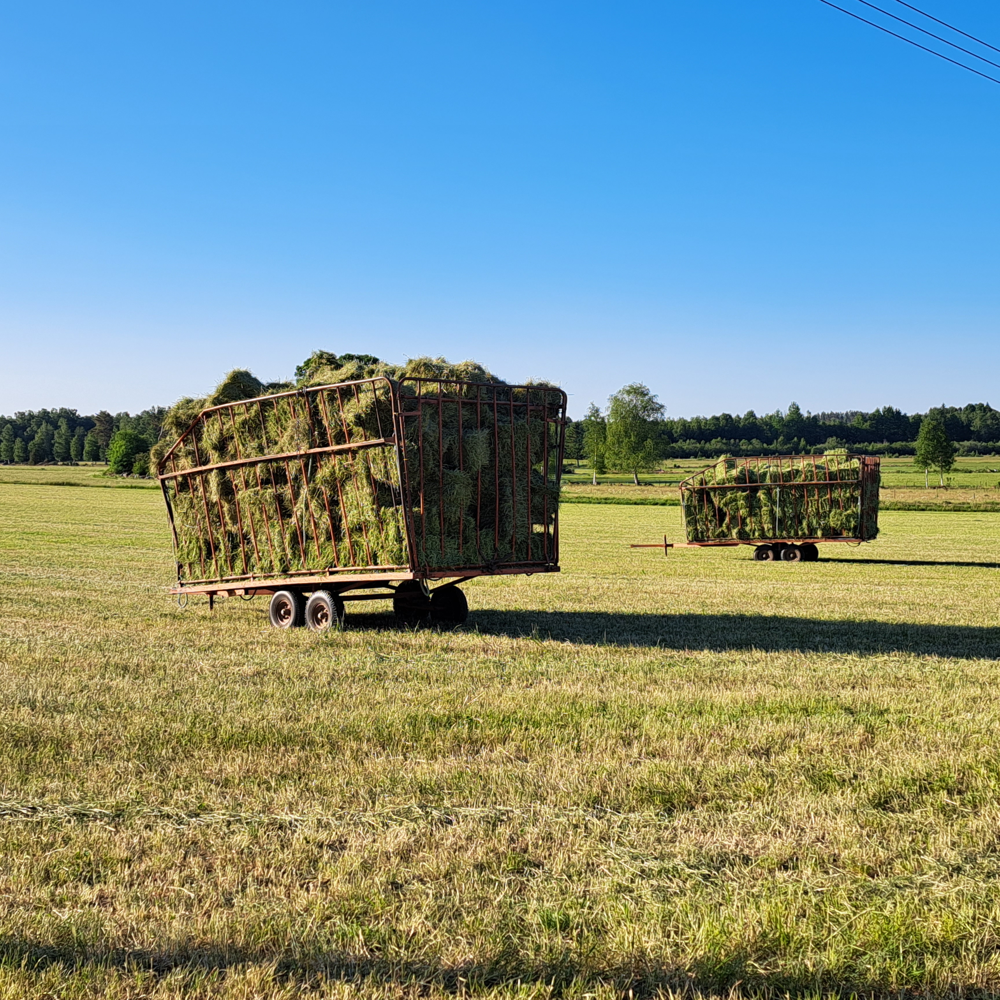
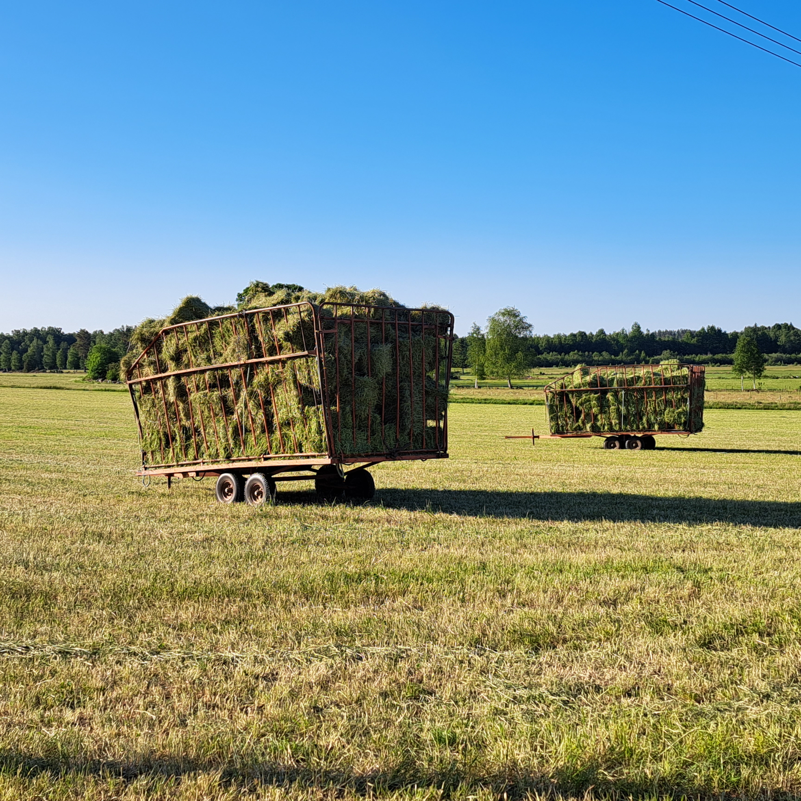

Bienvenue sur la page de mes expériences. Découvrez mes stages, mes emplois et mes expériences de bénévolat passés.


[Stage] R&D Data Scientist à Mentech Innovation
Mai 2024 - Septembre 2024 | Eindhoven, Pays-Bas
Mentech Innovation est une société dont l'objectif est d'améliorer la qualité de vie des personnes vulnérables, en particulier les personnes souffrant de démences et de handicaps mentaux. Pour cela elle s'appuie sur sa plateforme Hume, permettant la détection prématurée de crises de stress grâce à l'utilisation de capteurs corporels couplés à des algorithmes prédictifs basés sur les données physiologiques.
Projet : Le projet servait de Proof-Of-Concept dans l'établissment de modèles d'IA permettant de passer de la détection à l'intervention automatisée dans la gestion du stress du patient. L'objectif du modèle était de trouver la meilleure politique d'intervention (fréquence et timing) selon le profil du patient et son état de stress.
Tâches :
- Réalisation d'une analyse exploratoire des sources de données disponibles au sein de l'entreprise.
- Construction d'un dataset dédié à partir de données extraites de tests cliniques.
- Conception, entrainement et évaluation d'un prototype de modèle combinant l'apprentissage non supervisé, l'apprentissage par renforcement et les réseaux de neurones récurrents (LSTM, Transformers).
Technologies & Compétences: Python, PyTorch, Numpy, Pandas, Hugging Face Transformers, CUDA, Apprentissage non supervisé, Apprentissage par renforcement, AutoEncoders, Transformers, LSTM, Revue de littérature scientifique, LaTeX, Présentation à un public varié.
Liens utiles :


[Stage + CDD] Management de projet dans la logistique avec des véhicules autonomes à Goggo Network
Septembre 2022 - Avril 2023 | Paris, France
Goggo Network est une Start-up Espagnole dont l'objectif est la création et l'opération de réseaux de mobilités autonomes. Après avoir assisté les instances gouvernementales dans l'établissement d'un cadre réglementaire pour l'utilisation des véhicules autonomes en Europe, Goggo Network a lancé plusieurs services de livraisons à partir de 2022, opérant des véhicules autonomes allant du "robot-trottoir", se déplaçant jusqu'à 5 km/h sur la voie piétonne, au véhicule de logistique se déplaçant jusqu'à 50km/h sur route ouverte et en traffic mixte.
Projet : J'ai occupé ce poste pendant mon année de césure. Bien que j'ai eu l'occasion de participer à plusieurs projets au cours de cette expérience, la majeur partie de ma contribution a été sur le projet "Carrefour Drive Mobile". Celui-ci consistait à faire de la livraison de courses en tournée avec un véhicule 100% autonome équipé de casiers connectés s'arrêtant à des points d'intérêts. Une première européenne, avec une forte couverture médiatique (13h France 2, 13h TF1, Le Figaro...) et une présentation par M. Christophe Béchu (Ministre de la Transition écologique et de la Cohésion des territoires) et M. Alexandre Bompard (PDG Carrefour).
Tâches :
- Conception de projets pilotes, sécurisation du déploiement et des lancements de services avec les partenaires et les clients.
- Analyse des performances et amélioration continue des services et processus.
- Product owning des interfaces utilisateurs, opérateurs et clients du service.
- Communication de l'avancement des projets avec les partenaires, potentiels partenaires/clients et membres de l'équipe.
Technologies & Compétences: Communication, Rigueur, Autonomie, Esprit créatif, Analyse de données, Résolution de problèmes, Méthodes Agile, Plannification et Gestion de projet.
Liens utiles :


 

[Bénévolat] WWOOFing dans un ranch en Suède
Mai 2023 - Août 2023 | Ekjsö, Suède
Le WWOOFing (World Wide Opportunities on Organic Farms) est une forme de volontariat où des particuliers travaillent bénévolement dans des fermes en échange de l'hébergement, de la nourriture et d'une expérience éducative sur l'agriculture durable. Dans mon cas j'ai effectué mon expérience dans un ranch avec des chevaux et des canards, vendant des produits locaux et servant également de maison d'hôte. Je m'occupais principalement des animaux, de la rénovation de la grange, de la tenue du jardin et des champs et de l'acceuil des clients.